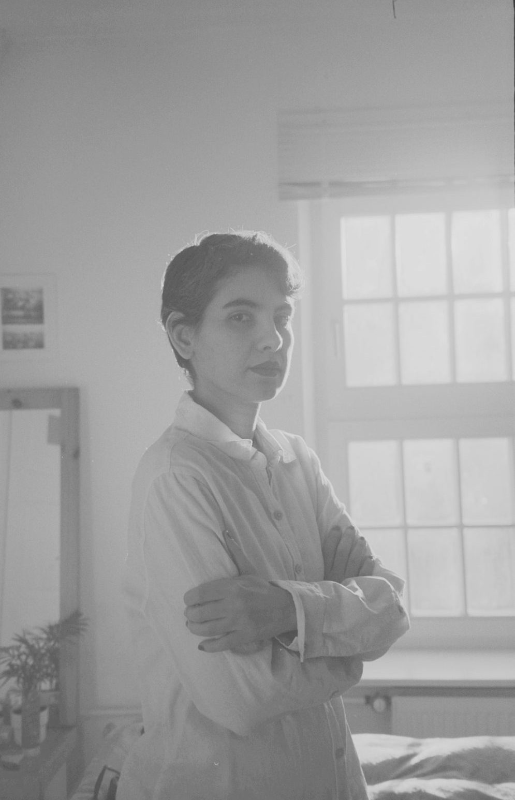
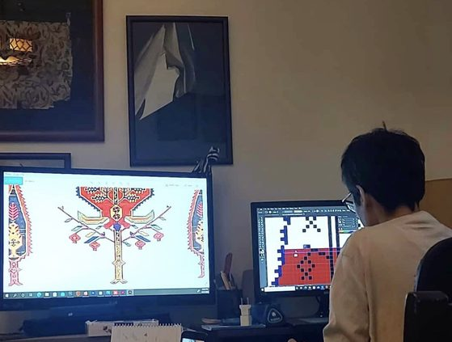
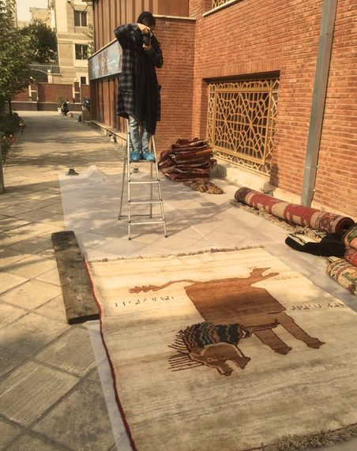
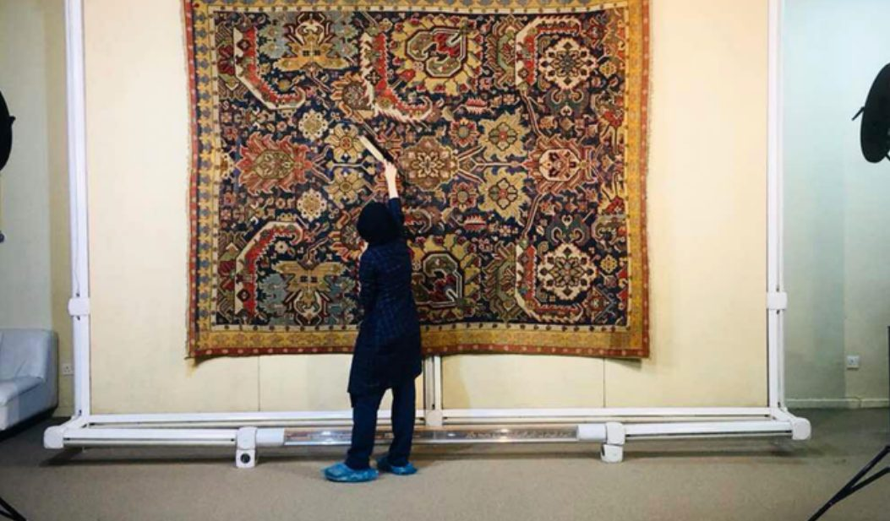
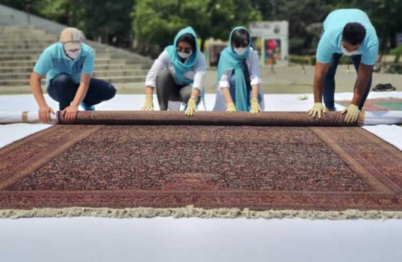
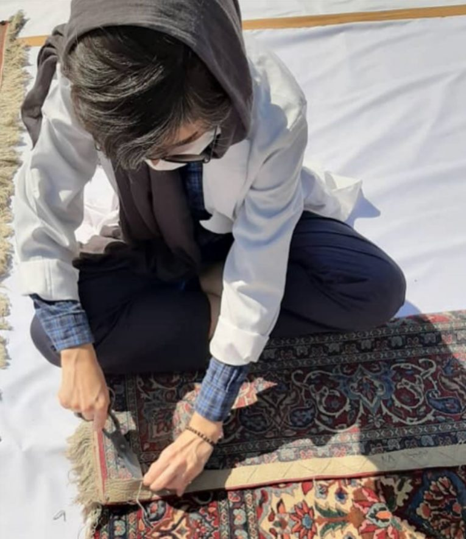

Artist · Textile · Public art · Installation · Performance
About

Artist statement
My artistic practice explores the relationship between memory, loss, and the material language of textiles. Working with thread, knots, and carpets, I investigate how personal and collective experiences can be held and transmitted through materials, gestures, and acts of making.
With a background in Carpet Design from the University of Art in Tehran and nearly a decade of experience working in museums in Iran, I approach weaving both as an artistic medium and as a form of embodied knowledge. I am particularly interested in the stories, gestures, and histories embedded in traditional weaving practices, especially those passed down through generations of women.
For me, a knot is more than a technical element. It can become a trace of a memory, a connection between people, or a way of holding what cannot easily be expressed in words. My work often emerges from experiences of migration, absence, and mourning, exploring how materials can preserve traces of lives and experiences that might otherwise remain unseen or forgotten.
Alongside my individual artistic practice, I develop participatory projects and workshops in which weaving becomes a space for exchange, collective creation, and shared learning. I am interested in how different experiences can meet through the simple act of making something together.
Through textile installations, performances, and collaborative processes, I seek to explore how inherited knowledge and personal memories can be transformed into new forms of connection.
Artist vision
History, culture and mythology
I am interested in working with history, culture and mythology, and I love to create pieces that evoke feelings of transcendent nostalgia. My style involves a bold symbiosis of modern elements with vintage aesthetics.


Restoration
Caring for Iran’s carpet collections
Carpets have always been a very personal spectrum for me, and I dedicated a lot of my time with pleasure to maintain this art, restoring, preserving and documenting hand-weavings across Iran’s most significant museum collections and historical complexes.



Contact
Let’s connect.
For collaborations, workshops, and conversations, please get in touch.